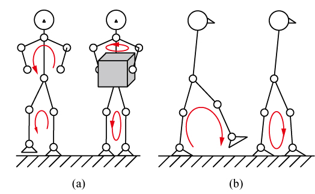

Humanoid Robot Group
研究背景
人間と同じく四肢を備えたヒューマノイドロボットの形状は非常に優れたユーザインターフェースであるといえます。
人口の高齢化が進む昨今、ヒューマノイドロボットは人間の住環境に溶け込み、
家事や介護の支援に活躍することが期待されています。
研究目的
現在のヒューマノイドロボットは2足歩行やバランス制御などの機能が最低限実現されている段階であり、
その応用分野はエンターテイメントや研究用プラットフォームなどに限定されています。
私達は人間の住環境で活動することが可能なヒューマノイドロボットの開発を目的とし、
その機能の向上に取り組んでいます。
研究内容
3. 動力学シミュレータ
開発中の制御則や作業を直接実機に適用すると、
予期せぬ事故が発生するなどの危険があります。
安全性や有用性の確認など、効率のよい開発を行うためには動力学シミュレータが欠かません。
このようなシミュレータには高い計算速度とモデルの変更を容易に扱えることが求められます。
また、制御則の開発には高い計算精度も要求されます。
私達はそれらを考慮して、動力学計算にDivide-and-Conquer Algorithmを使用し、 人型ロボットのためのモデル変更の容易な高速動力学シミュレータの開発を目的としています。
人型ロボットでは物体の把持や歩行の際の両足支持期などに開リンク機構と 閉リンク機構とのモデルの切り替えが発生するため、シミュレータはこのような状況にも 対応する必要があります。
私達はそれらを考慮して、動力学計算にDivide-and-Conquer Algorithmを使用し、 人型ロボットのためのモデル変更の容易な高速動力学シミュレータの開発を目的としています。
人型ロボットでは物体の把持や歩行の際の両足支持期などに開リンク機構と 閉リンク機構とのモデルの切り替えが発生するため、シミュレータはこのような状況にも 対応する必要があります。

{kind=link}
Fig. 1 リンク機構のモデルの切り替え:(a) 物体の把持、(b) 歩行の際の両足支持期.
関連動画
Coin3Dを用いることでシミュレーションの結果を視覚的に確認することができます。
重心位置や反力の大きさに焦点を当てて確認することも可能です。
動画は左がシミュレーション中の動作の様子、右がシミュレーション中の重心位置、
反力の大きさとなります。